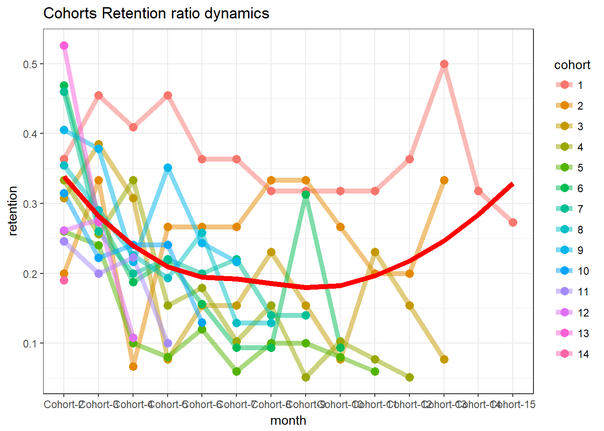
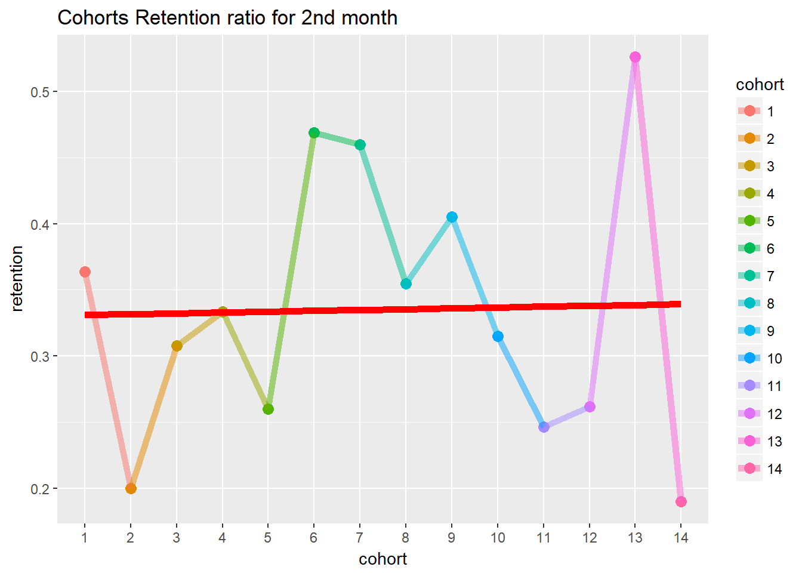
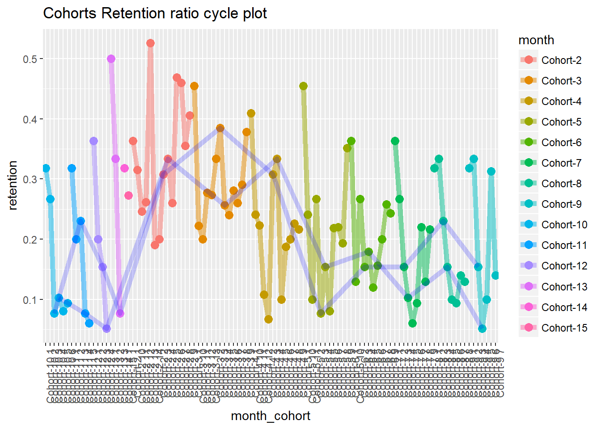

Startups and other growth businesses are using Cohort Analysis to calculate Customer Retention Rate as one of the key actionable metrics for their businesses.
A cohort is a group of users who share something in common, for example, their sign-up date, first purchase month, birth date, aquisition channel, etc. Cohort groups will be tracked overtime, helping you spot trends, understand repeat behaviors(purchases, engagement, amount spent, etc.), and monitor your customer and revenue retention.
Cohorts are very often be created based on a customer’s first usage of the platform, where “usage” is dependent on your business’ key metrics. For Uber or Lyft, usage would be booking a trip through one of their apps. For GrubHub, it’s ordering some food. For AirBnB, it’s booking a stay.
With these companies, a purchase is at their core - their revenues are tied to their users’s purchase behavior.
For those companies like Facebook and Twitter, customer’s engagement with the platform is more central - are you visiting their sites every day? Are you performing some action on them - maybe a “like” on Facebook or a “favorite” on a tweet?
When building a cohort analysis, it’s important to consider the ralationship between the event or interation tou’re tracking and its relationship to your business model.
Cohort analysis helps to understand business’ health and “stickiness”- the loyalty of customers since “acquiring a new customer is anywhere from five to 25 times more expensive than retaining an existing one”.
Additionally, your product evolves over time. New features are added and removed, the design changes, etc. Different cohorts undergo different experience, therefore, observing individual groups overtime is a starting point to understand how these changes affect user behavior.
Suppose we have following dataset (you can dowload it here)
data <- read_excel("D:/#Dulieu/Desktop/data/data/data/cohort/foods.xlsx", sheet = 2)options(scipen = 99)
food_data <- data
names(food_data) <- tolower(names(food_data))
food_data$order_period <- as.Date(format(food_data$orderdate, "%Y-%m-01"))food_data <- food_data %>%
group_by(userid) %>%
mutate(cohort_grp=min(order_period))
food_data$cohort_period <- round(as.numeric(food_data$order_period-food_data$cohort_grp, unit="days")/30,0) + 1
food_data$cohort_grp <- round(as.numeric(food_data$cohort_grp-as.Date("2008-12-01"), unit="days")/30,0)user_retention <- food_data %>%
group_by(cohort_grp, cohort_period) %>%
summarise(no_cus=n_distinct(userid)) %>%
spread(cohort_period, no_cus)
user_retention$cohort_grp <- as.factor(user_retention$cohort_grp)x <- user_retention[,c(2:16)]
y <- user_retention[,2]
reten.r <- apply(x, 2, function(x) x/y )
reten.r <- data.frame(cohort=(user_retention$cohort_grp), reten.r)
for (i in (2:16)) {
names(reten.r)[i] <- paste("Cohort", sep="-", i-1)
}reten.r <- reten.r[,-2]
#dynamics analysis chart
cohort.chart1 <- melt(reten.r, id.vars = 'cohort')
colnames(cohort.chart1) <- c('cohort', 'month', 'retention')
cohort.chart1 <- filter(cohort.chart1, retention != 0)
p <- ggplot(cohort.chart1, aes(x=month, y=retention, group=cohort, colour=cohort))
p + geom_line(size=2, alpha=1/2) +
geom_point(size=3, alpha=1) +
geom_smooth(aes(group=1), method = 'loess', size=2, colour='red', se=FALSE) +
labs(title="Cohorts Retention ratio dynamics") +
theme_bw()
#second month analysis chart
cohort.chart2 <- filter(cohort.chart1, month=='Cohort-2')
p <- ggplot(cohort.chart2, aes(x=cohort, y=retention, colour=cohort))
p + geom_point(size=3) +
geom_line(aes(group=1), size=2, alpha=1/2) +
geom_smooth(aes(group=1), size=2, colour='red', method = 'lm', se=FALSE) +
labs(title="Cohorts Retention ratio for 2nd month")
#cycle plot
cohort.chart3 <- cohort.chart1
cohort.chart3 <- mutate(cohort.chart3, month_cohort = paste(month, cohort))
p <- ggplot(cohort.chart3, aes(x=month_cohort, y=retention, group=month, colour=month))
m1 <- filter(cohort.chart3, cohort=='3')
m2 <- filter(cohort.chart3, cohort=='4')
p + geom_point(size=3) +
geom_line(aes(group=month), size=2, alpha=1/2) +
labs(title="Cohorts Retention ratio cycle plot") +
geom_line(data=m1, aes(group=1), colour='blue', size=2, alpha=1/5) +
geom_line(data=m2, aes(group=1), colour='blue', size=2, alpha=1/5) +
theme(axis.text.x = element_text(angle = 90, hjust = 1))